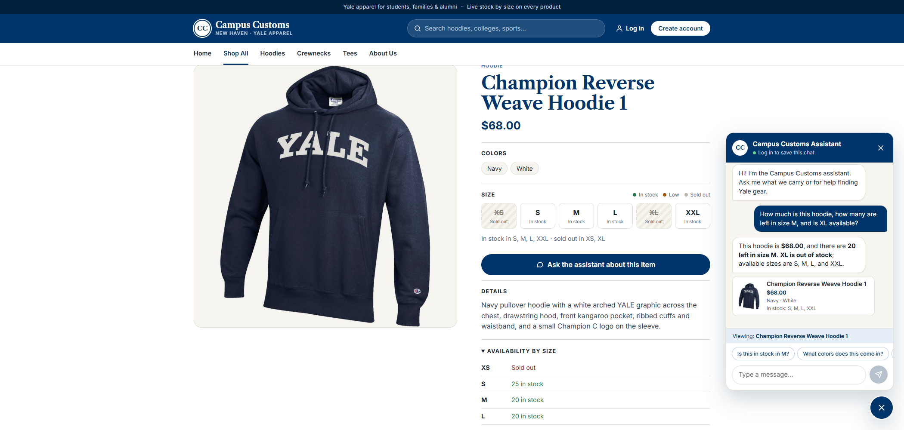
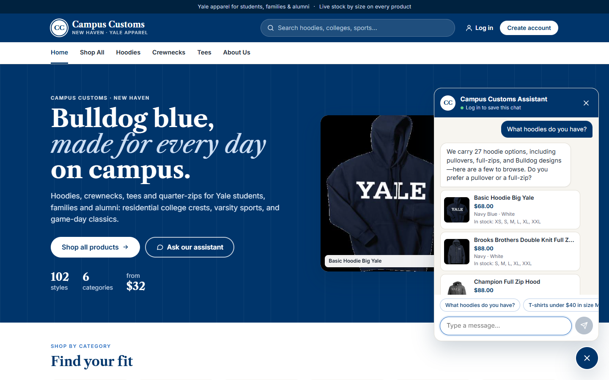
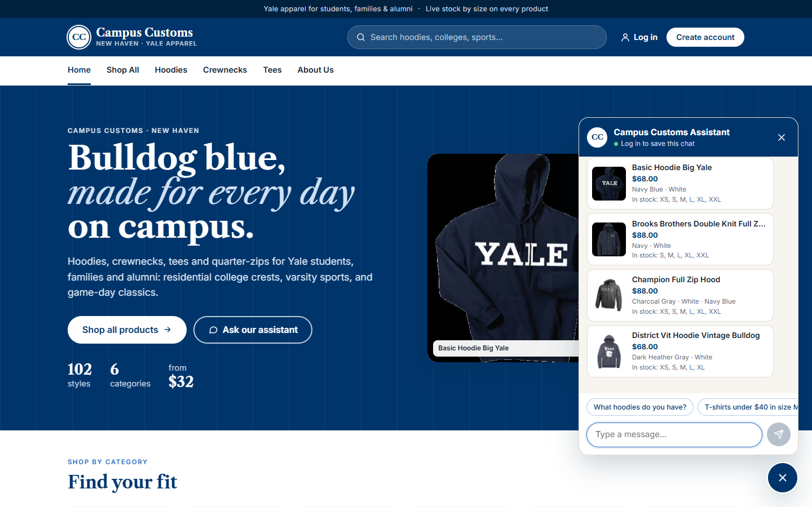
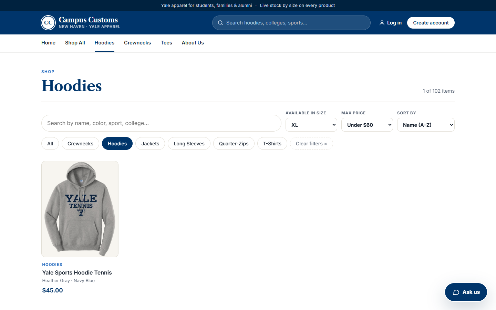

- Chatbot answers an inventory / price question with real database values
- Dynamic product cards appear in the chat after a category question
- Usability improvement from Problem 9: product search & filters on the Products page
1. Chat checks the inventory level of an item PASS
Test
On the product page for Champion Reverse Weave Hoodie 1, I clicked “Ask the assistant about this item” and typed: How much is this hoodie, how many are left in size M, and is XL available?
Screenshot

Agent answer vs. database
| Fact | Agent said | Database | |
|---|---|---|---|
| Price | $68.00 | catalogue.price = 68.0 | ✅ |
| Size M | 20 left | inventory M = 20 | ✅ |
| Size XL | out of stock | inventory XL = 0 | ✅ |
| Sizes available | S, M, L, XXL | S 25 · M 20 · L 20 · XXL 15 (XS 0, XL 0) | ✅ |
What this proves
The agent uses its database tools (get_product_details, get_inventory) and the current-page context to answer with the real price and per-size stock. It correctly calls a 0-quantity size out of stock and doesn't guess.
2. Dynamic product cards after a category question PASS
Test
On the Home page, I opened the chat and asked What hoodies do you have?
Screenshots


Cards vs. database
| Card (links to) | Price on card | Database | |
|---|---|---|---|
Basic Hoodie Big Yale (/products/basic-hoodie-big-yale) | $68.00 | 68.0 · pullover hoodie | ✅ |
| Brooks Brothers Double Knit Full Zip Hoodie Yale | $88.00 | 88.0 · full-zip hooded sweatshirt | ✅ |
| Champion Full Zip Hood | $88.00 | 88.0 · full-zip hooded sweatshirt | ✅ |
| District Vit Hoodie Vintage Bulldog | $68.00 | 68.0 · pullover hoodie | ✅ |
What this proves
The agent returns structured product_ids. The backend reads every card field from the database, and the React chat renders the matches as clickable product cards. The total of 27 hoodies matches the catalogue, and all four cards are real hoodies with correct prices.
3. Usability feature (Problem 9): product search & filters PASS
Test
On the Products page, I picked the Hoodies category, set Available in size = XL and Max price = Under $60.
Screenshot

/products?category=Hoodies&size=XL&max=60, so the filters survive Back, refresh and shared links.Filter result vs. database
| Query | Page shows | Database | |
|---|---|---|---|
| Hoodies with XL quantity > 0 and price ≤ $60 | 1 item: Yale Sports Hoodie Tennis ($45.00) | exactly 1 match: Yale Sports Hoodie Tennis | ✅ |
What this proves
The Problem 9 filters work on real catalogue data. The size filter uses real per-size stock from the inventory table, so a shopper sees only hoodies they can actually buy in XL within budget, without opening each product page.